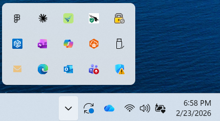
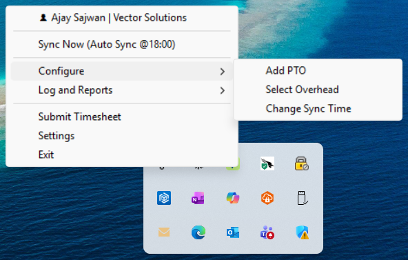
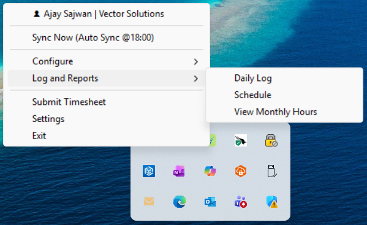

At Vector Solutions, every employee must log 8 hours daily in Tempo via Jira. For 200+ engineers, product owners, and sales staff, this means 15-20 minutes of manual entry, every working day, across the entire organization.
Developers open Jira, try to remember which tickets they worked on, estimate hours for each, navigate to Tempo, fill in worklogs with descriptions, and repeat for each ticket. At month-end, they scramble to fix shortfalls before the submission deadline.
| Developers | 150 people, Jira-based |
| Product Owners | 30 people, activity-based |
| Sales Team | 20 people, activity-based |
Manual timesheet entry costs more than anyone realized. The numbers tell a clear story.
| Role | Headcount | Time lost / month | Annual cost |
|---|---|---|---|
| Developers | 150 | 825 hrs | $693,000 |
| Product Owners | 30 | 220 hrs | $211,200 |
| Sales Team | 20 | 147 hrs | $114,660 |
| Manager Follow-ups | 15 | 130 hrs | $140,400 |
| Total | 215 | 1,322 hrs | $1,159,260 |
Plus hidden costs: payroll delays ($6K), compliance risk ($50K), employee frustration (6.8/10 rating).
The script runs on each employee's computer. It reads Jira, distributes hours, and creates worklogs automatically. Tempo syncs from Jira.
Script queries your active tickets via Jira REST API. Filters by status: IN DEVELOPMENT or CODE REVIEW.
Splits your 8-hour day equally across active tickets. Generates smart descriptions from ticket content.
Creates Jira worklogs (Tempo auto-syncs). At month-end, submits the full timesheet for manager approval.
21 days from idea to production. 10 releases in 3 weeks.
Daily sync, Jira/Tempo integration, smart descriptions
ASCII output, DualWriter, batch wrappers
Holidays (100+ countries), PTO, weekly verify, monthly submit
Tray icon, toast notifications, smart exit, auto-start
5 overhead cases, PI support, hybrid Jira+Tempo detection
Full macOS: tray app, install.sh, cron, osascript
Gap detection, --view-monthly, --fix-shortfall
4 methods use Tempo API primary, Jira fallback
3 zip types, embedded Python 3.12, one-click install
Submit mid-month when remaining days are non-working
Everything a team member needs, from daily sync to monthly submission, in a single install.
Distributes hours across active Jira tickets at your configured time (default 6 PM).
Friday check catches missed days. Backfills from historical ticket data.
Verifies total hours, blocks on shortfalls, submits for approval. Early submit supported.
5 cases covered: daily overhead, no tickets, manual entries, PTO/holidays, planning week.
Skips weekends, org holidays (auto-fetched), national holidays (100+ countries), and PTO.
Persistent icon with color status, one-click sync, PTO dialog, toast notifications.
Full support for Windows 10/11 and macOS. Platform-specific installers and native UI.
Windows Full (embedded Python), Windows Lite, and Mac. One-click install.
Generates meaningful worklog comments from Jira ticket descriptions and recent comments.
API tokens encrypted with Windows DPAPI. HTTPS only. No cloud storage of credentials.
Safe to re-run. Deletes previous entries then creates fresh. No duplicates.
Native notifications on Windows (winotify) and Mac (osascript). Status and alerts.
4 core methods read Tempo API first with Jira fallback. Catches manual entries Jira can't see.
Daily scheduler detects if the tray app was closed and relaunches it with a recovery notification.
Personalized greeting on launch with time-of-day message. "Welcome back" on auto-restart.
Verifies today's hours are logged before closing. Warns if worklogs are missing to prevent gaps.
Adjust daily sync time from the tray Configure menu. Validates HH:MM and reschedules instantly.
--view-monthly shows per-day hours with gap detection. --fix-shortfall fills missing days interactively.
Guided first-run: role selection, token entry, location picker (100+ countries), overhead config.
Full command suite: sync, verify, submit, PTO, schedule, overhead, monthly reports, and more.
Hours auto-distributed across active Jira tickets. Needs Jira + Tempo tokens. Saves 15-20 min/day. Includes 2h default daily overhead.
Hours logged via configured manual activities. Needs Tempo token only. Saves 10-15 min/day.
Pre-configured activities synced via Tempo API. Needs Tempo token only. Saves 10-15 min/day.
Right-click the tray icon to access all features. Runs silently in the background.

Color-coded status: green = idle, orange = syncing, red = error.

Add PTO, select overhead stories, change sync time.

Daily log, schedule calendar, monthly hours report.
Real output from the running application.
8 classes, single file, no external frameworks.
Developers write to Jira; Tempo auto-syncs. PO/Sales write directly to Tempo.
The numbers speak for themselves. A one-time $8K investment returns over $1.2M annually.
| Investment | Cost | |
|---|---|---|
| Development | One-time, already completed | $6,000 |
| Hosting | Runs locally on each machine | $0 |
| Licenses | No subscriptions required | $0 |
| Annual Maintenance | Ongoing support | $2,000 |
| Total Year 1 | $8,000 |
Get the appropriate zip: Windows Full (includes Python), Windows Lite, or Mac.
Run install.bat or ./install.sh and follow the setup wizard.
Tray app starts automatically. Timesheets are filled every day at 6 PM. No manual action needed.
Single executable, no Python install needed. Double-click to run.
PlannedExponential backoff for failed API calls. Max 3 retries.
PlannedMS Teams notifications for sync status. Code exists, needs webhook URL.
ReadyPreview what would be logged without creating worklogs.
PlannedAllocate more hours to higher-priority tickets.
Planned--from / --to flags to backfill multiple days at once.
PlannedAuto-fill gap hours on last working day before submitting. No manual fix needed.
NextWebhook-based Slack alerts for sync status and shortfall warnings.
PlannedVerify Jira and Tempo tokens on startup. Fail fast with clear error message.
Planned